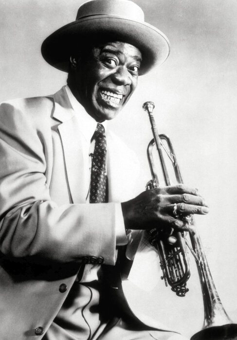
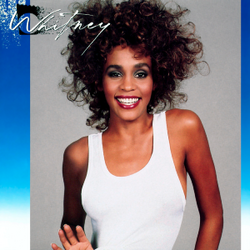
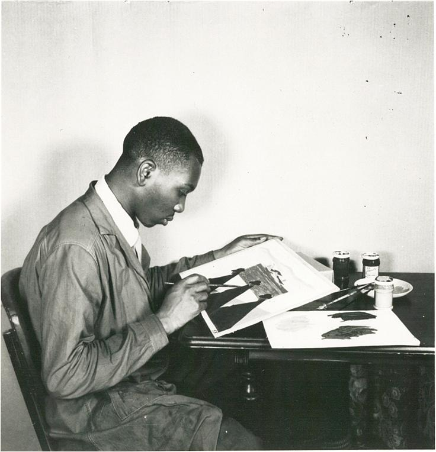

Music
Music in America wouldn’t be the same without African Americans. Jazz, blues, gospel, and hip-hop show their creativity, resilience, and the stories they’ve lived through.

Louis Armstrong – Jazz Legend

Whitney Houston – Gospel & Pop Icon
Tupac Shakur – Hip-Hop Pioneer
Art & Literature
Artists and writers like Jacob Lawrence, Langston Hughes, and Zora Neale Hurston really captured what African American life and culture is all about, showing struggles and stories through their paintings and writing.

Jacob Lawrence – The Migration Series
Langston Hughes – Poet & Activist
Zora Neale Hurston – Author of 'Their Eyes Were Watching God'
Sports
African American athletes have made a huge impact on sports, breaking barriers and showing incredible talent on every field.

Jackie Robinson – Baseball Pioneer
Serena Williams – Tennis Champion

Michael Jordan – Basketball Icon
Food & Cuisine
Soul food, which comes from African American traditions, has influenced American cooking with its flavors, techniques, and stories.

Fried Chicken – A Soul Food Classic
Collard Greens – Southern Favorite